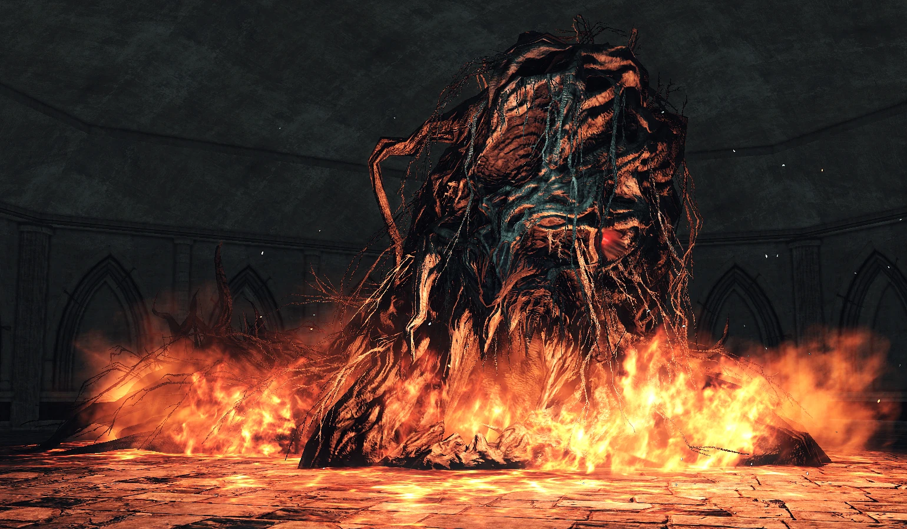
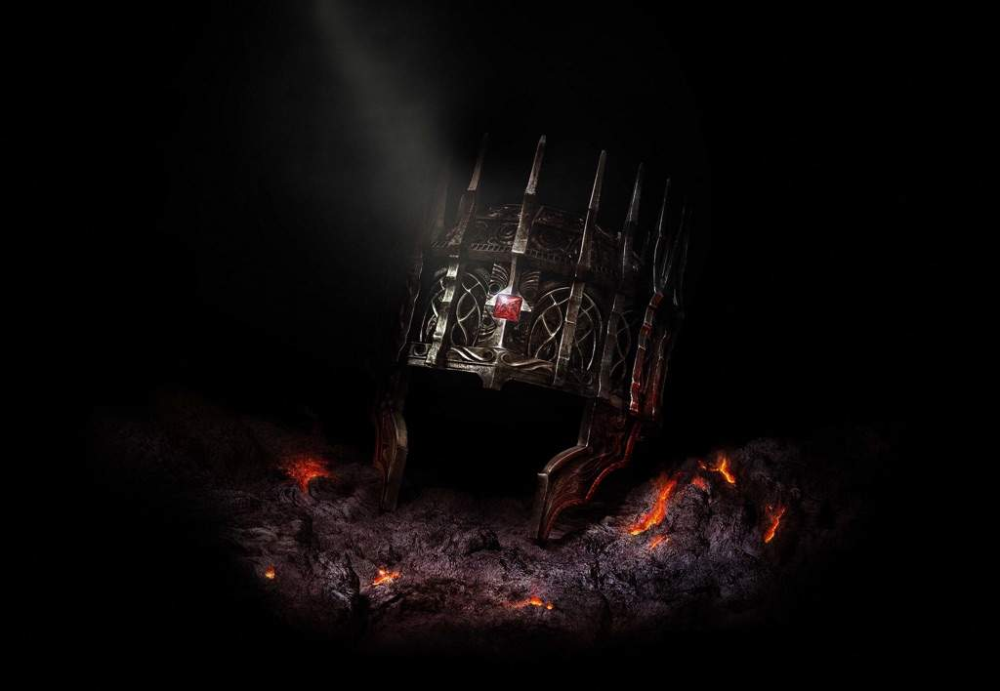
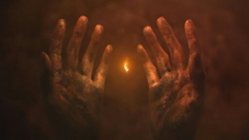

"Na Era dos Antigos, o mundo era informe, envolto por névoa. Uma terra de penhascos cinzentos, Archtrees e Dragões Eternos."
No início não havia tal coisa como vida ou morte. A terra era um cinza monótono constante, governado por dragões imortais. Não se sabe se as serpentes primordiais existiram ou não nesta época.
Os dragões são uma raça apresentada em Dark Souls, que habitavam nas Archtrees.
"Mas depois houve fogo, e com fogo veio a disparidade. Calor e frio, vida e morte e, claro, luz e escuridão. Então, da escuridão, eles vieram, e encontraram as Almas dos Senhores dentro da chama".
Com o fogo veio a divisão das coisas e com ele, estranhos seres vivos que não eram dragões emergiram da escuridão. Gigantes, parentes das Archtrees e raças menores também. Três desses seres encontraram as Almas dos Senhores dentro da chama. Eles ganharam imensas quantidades de poder, tornando-os capazes de derrotar os dragões, e assim eles lutaram para mudar a ordem do mundo.
Uma Alma foi tomada pelo Senhor do Túmulo Nito, o primeiro dos mortos. A segunda Alma foi encontrada pelo Bruxa de Izalith e suas filhas do Caos. A última foi tirada por Gwyn, o Senhor da Luz do Sol, e seus fiéis cavaleiros. No entanto, o que restou quando o resto foi tomado foi uma alma peculiar, conhecida como a Alma Escura, encontrada pelos facilmente esquecidos. Pigmeu Furtivo.
"Com a força dos Senhores, eles desafiaram os Dragões. Os poderosos parafusos de Gwyn descascaram suas escamas de pedra. As Bruxas teceram grandes tempestades de fogo. Nito desencadeou um miasma de morte e doença. E Seath, o Sem Escamas, traiu os seus, e os Dragões não existiam mais."
Nito, a Bruxa de Izalith, e Gwyn tornaram-se Lordes com o poder da chama, e travaram guerra contra os dragões. Para ajudar em sua batalha, Gwyn usou o poder do sol para gerar os primeiros milagres para livrar os dragões de suas escamas, fonte de sua imortalidade, e a Bruxa de Izalith criou as primeiras piromancias da feitiçaria e queimou as Arquiárvores, as casas ancestrais dos Arquidragões. Os Lordes, com a ajuda do dragão Seath the Scaleless, derrotaram os dragões em grandes caçadas de dragões e venceram a guerra, levando os dragões à beira da extinção, de modo que apenas seus parentes distantes permaneceram.
"Gwyn usou o poder do sol para gerar os primeiros milagres para livrar os dragões de suas escamas"
Seath foi o primeiro dragão mortal, nascido sem escamas, que eram a fonte de imortalidade dos dragões. Ele ficou com medo da morte e ficou do lado de Gwyn. Seath era um acadêmico brilhante e focado em pesquisa, o que gerou as primeiras feitiçarias.
"But soon, the flames will fade, and only Dark will remain"
Com os Dragões derrotados, os Lordes estabeleceram seus próprios reinos. Nito se aventurou profundamente nas Catacumbas, onde recompensou seus servos e criou o Finito e o Milfanito e começou a oferecer seu Fogo à estranha força que havia encontrado, a Morte, e procurou espalhá-lo, servindo para administrar a morte a todos os tipos de seres. A Bruxa de Izalith e suas filhas retornaram a Izalith para estudar suas Feiticeiras de Chamas, eventualmente dando origem à Piromancia, a criação e o controle da Chama dentro da própria Alma. Gwyn estabeleceu-se no auge de todos os seus reinos na cidade montanhosa dourada, Anor Londo, onde ele e seus irmãos se proclamaram deuses. Neste momento, Gwyn dá a Seath o título de Duque e concede-lhe os Arquivos para sua pesquisa, onde ele começa a estudar os segredos da imortalidade.
Anor Londo lugar "onde ele e seus irmãos se proclamaram deuses."
Pouco se ouve ou se sabe sobre o pigmeu, apenas que ele é o precursor de toda a humanidade, a menor das raças desde o alvorecer dos tempos. Depois que seus descendentes se reproduziram, através de muitas gerações, um grande número de reinos humanos surgiu, e os humanos começaram a aprender feitiçarias, milagres e piromancias. Especula-se que a afinidade do ser humano com a magia é atestada para o poder dos fragmentos da Alma Escura espalhados dentro de toda a humanidade.
O estado inicial da Era do Fogo está envolto em mistério, muito do qual é abordado nos eventos de Dark Souls III. No entanto, eventualmente, veio a ser que, porque a raça dos deuses era muito mais poderosa do que os seres humanos, a humanidade os considerava verdadeiros deuses e começou a adorá-los, formando religiões.
Gywn e as ordens de seu poderoso reino reinaram supremos e criaram muitas forças que deveriam desempenhar um papel fundamental em eventos futuros. Gwyn teve muitos filhos, cada um dos quais recebeu parte de seu senhorio. Seu primogênito tornou-se deus da guerra, mas em eventos sem nome foi despojado de seu direito de primogenitura e removido dos Anais da História, de tal forma que nem mesmo seu nome permanece. Isto é elaborado em DS3 onde O Rei Sem Nome Gwynevere, a amada filha de Gwyn, se tornaria a Deusa da fertilidade e da generosidade, e se tornaria a base dos milagres de cura. Embora possa ter havido outros, apenas um outro filho de Gwyn é conhecido e que é Sol Escuro Gwyndolin, último filho de Gwyn, nascido com o poder do luar e criado como mulher. Outros deuses formam uma corte em torno de Gwyn, incluindo Flann, o Deus do Fogo. Outros deuses permanecem distantes, como a bruxa de cabelos de corvo Velka, que se tornaria a Deusa do Pecado. Gwyn governou com um exército composto por muitas legiões de cavaleiros. Ele tinha muitos amigos e aliados, como a Serpente Primordial Frampt e o imponente cavaleiro, Havel The Rock. Supremo entre suas forças estavam quatro cavaleiros sob seu comando direto: Dragonslayer Ornstein, Hawkeye Gough, Lord's Blade Ciaran, e Artorias of The Abyss, que desempenharão um papel importante nos eventos de Oolacile. Ele também legou fragmentos de sua própria alma a Seath e Os Quatro Reis de New Londo por suas contribuições. Seath tornou-se muito popular na corte e, aparentemente, gerou descendentes com os deuses, como Priscilla, criando uma linhagem meio draconiana que teve que ser escondida.
➣ O Desvanecimento da Chama, O Nascimento de Demônios e o Reacender da Chama ➣
Eventualmente, aconteceu que as chamas começaram a desaparecer e, com isso, o poder dos Deuses e tudo o que extraiu poder deles, de tal forma que um dia, eles desapareceriam completamente. No entanto, era tal que o oposto do Fogo, Escuro, e a raça nascida dele, os Humanos, não diminuíram, mas cresceram em poder à medida que o Fogo se desvanecia, de modo que um dia seria que apenas as Trevas permaneceriam. A Bruxa de Izalith decidiu tentar recriar a Primeira Chama em Izalith. Isso deu terrivelmente errado, e a Chama do Caos e o Leito do Caos nasceram, ambos os quais eram uma zombaria distorcida da Primeira Chama, distorcendo as Bruxas de Izalith em formas hediondas e dando à luz os demônios. O fracasso da Bruxa de Izalith gera a piromancia como ela existe nos jogos, e destrói Izalith, apodrecendo a terra acima dela. Apenas ruínas, caos e fogo permanecem onde Izalith já esteve. A única sobrevivente não afetada deste evento é Quelana, que passa o conhecimento da piromancia para sua primeira aluna e se estende até o Grande Pântano. Muitas excursões foram lideradas contra esses demônios pelos cavaleiros de Gwyn.
"A Bruxa de Izalith decidiu tentar recriar a Primeira Chama em Izalith. Isso deu terrivelmente errado, e a Chama do Caos e o Leito do Caos nasceram, ambos os quais eram uma zombaria distorcida da Primeira Chama, distorcendo as Bruxas de Izalith em formas hediondas e dando à luz os demônios.""
Gwyn, a fim de evitar o fim da Era do Fogo, decidiu oferecer seu próprio corpo e poder como sacrifício à Primeira Chama. Liderando metade de seu exército e deixando os Cavaleiros de Prata para proteger Anor Londo, Gwyn partiu em uma grande jornada para ligar o fogo, terminando no Forno da Primeira Chama, onde Gwyn incendiou sua própria alma poderosa e reacendeu a Primeira Chama, queimando a si mesmo e seu exército, deixando apenas cascas na forma dos Cavaleiros Negros e de si mesmo, Senhor de Cinder, e restaurando A Era do Fogo. Isso ofereceu uma solução temporária, mas o fogo novamente lentamente começou a desaparecer.
Os Cavaleiros Negros são inimigos poderosos em Dark Souls 3. Esses inimigos são ícones da série desde sua introdução em Dark Souls.
Uma solução acabou se apresentando na forma dos mortos-vivos, humanos com o poder das trevas que não podiam morrer.
Um diálogo importante sobre este assunto é dado por Kaathe:
"Hmm... Você é surpreendente. A verdade eu compartilharei sem sentimento. Após o advento do fogo, os antigos senhores encontraram as três almas. Mas seu progenitor encontrou uma quarta alma única. A Alma Sombria. Seu ancestral reivindicou a Alma Negra e esperou que o Fogo diminuísse. E logo, as chamas desapareceram, e apenas Dark permaneceu. Assim começou a era dos homens, a Era das Trevas. Contudo... Lord Gwyn tremeu no escuro. Agarrado à sua Era de Fogo, e com medo terrível dos seres humanos, e do Senhor das Trevas que um dia nasceria entre eles, Lord Gwyn resistiu ao curso da natureza, sacrificando-se para ligar o fogo e ordenando que seus filhos pastoreassem os humanos, Gwyn borrou seu passado, para impedir o nascimento do Senhor das Trevas.
Eu sou a serpente primordial. Procuro corrigir os erros do passado para descobrir nosso verdadeiro Senhor. Mas a outra serpente, Frampt, perdeu o sentido e fez amizade com Lord Gwyn. Guerreiro morto-vivo, estamos na encruzilhada. Só eu sei a verdade sobre o seu destino. Você deve destruir o desvanecido Senhor Gwyn, que mimou o Fogo e resistiu à natureza, e se tornar o Quarto Senhor, para que você possa inaugurar a Era das Trevas!"
Kaathe é uma Serpente Primordial, assim como Kingseeker Frampt. Ele é o líder do Pacto dos Darkwraiths, e foi ele quem tentou os Quatro Reis com o poder de Drenagem de Vida que, por sua vez, levou à eventual inundação de New Londo.
De acordo com Kaathe, O Pigmeu Furtivo tomou a Alma Negra e deu à luz a humanidade. Quando a Chama começou a desaparecer, as Almas Divinas tomadas pelos deuses começaram a perder poder, enquanto os humanos nascidos da Alma Escura começaram a se tornar mais fortes. Gwyn temia que algum dia os humanos assumissem o controle e aniquilassem os Deuses, assim como os Deuses mataram os Dragões Eternos, o que levaria a outra mudança na ordem da raça líder do mundo. Sem ligar o fogo, o mundo desceria a uma era de trevas – uma era de homens – onde a Alma das Trevas governa. Gwyn, temendo essa religação dos Deuses e os estranhos horrores das Trevas, escolheu ligar o fogo para evitar esta era de trevas.
Em algum ponto desconhecido durante esses eventos, o Sinal Sombrio começou a se manifestar sobre os homens, de modo que suas almas não passariam para a Morte, seja ela qual for. Aqueles que carregavam a marca após a morte se encontrariam em uma fogueira, colocada por Gwyn em sua jornada para ligar o fogo, desprovidos da Alma Negra, a Humanidade, que lhes dera poder. Aqueles humanos desprovidos de humanidade e propósito gradualmente perderiam a cabeça e se tornariam Hollow, uma condição irrevogável de loucura.
Kaathe, juntamente com outras serpentes primordiais, começou a manipular o Homem para acelerar a ascensão das Trevas. Os feiticeiros de Oolacile, portadores de magia de pura luz, foram enganados pela Serpente Primordial Kaathe para perturbar o Manus Humano Primordial. Ao despertar, a humanidade de Manus enlouqueceu e começou a consumir Oolacile, criando assim o Abismo, um lugar de pura escuridão e transformando a humanidade da cidade em monstros, Manus levando sua princesa, Crepúsculo, cativa. Os Quatro Cavaleiros de Gwyn foram despachados para Ooacile, mas não puderam pisar no Abismo, que abrigava muitas criaturas mortais, até que o Cavaleiro Artorias de Gwyn fez um pacto com as criaturas do Abismo e, armado com equipamentos mágicos, tentou derrotar Manus. Embora a história diga o contrário, Artorias foi dominado e corrompido pelo Abismo. Manus é eventualmente derrotado por uma figura desconhecida e, ao fazê-lo, sua Alma é quebrada, dividindo o Abismo em muitos fragmentos, bem como dando à luz as Filhas do Abismo.
"Os 4 Reis de New Londo"
Uma vez que o Abismo surgiu, Kaathe seduziu os Reis de New Londo, uma cidade de mortos-vivos, a se tornarem Espectros das Trevas e aprenderem a Arte da Drenagem da Vida, para que eles pudessem renunciar ao esvaziamento e reunir humanidades para reconstruir a Alma Sombria. Alguns diálogos de Kaathe:
"Ahh... Se você quiser, concederei a arte de Lifedrain, o poder lendário do Senhor das Trevas. Pode preservar sua humanidade enquanto mortos-vivos e se livrar das algemas colocadas sobre seus irmãos."
Depois de perceber a ameaça que os quatro Reis levaram para o mundo inteiro, os seladores inundaram New Londo, resultando na maldição da cidade e deixando muitos mortos ou nas mãos dos Espectros das Trevas.
➣ O Abandono de Anor Londo e As Lâminas da Lua Escura ➣
"Gwyndolin e seus seguidores se tornam a única força no poder em Anor Londo."
Quando o fogo começou a desaparecer novamente, a luz do sol começou a desaparecer, lançando escuridão sobre a terra. Desprovidos de sua figura central, os deuses fugiram de Anor Londo, deixando apenas Gwyndolin, O Sol Negro imbuído do poder da lua, e Seath, que há muito tempo havia enlouquecido. Gwyndolin criou várias ilusões para manter a ilusão do poder dos Deuses, incluindo uma Gwynevere ilusória e que a luz não estava tão desbotada. Para proteger esses segredos e o próprio Caminho do Fogo, ele criou As Lâminas da Lua Escura, uma sociedade secreta que matou os inimigos dos deuses. Darksun Gwyndolin e seus seguidores se tornam a única força no poder em Anor Londo.
"Apenas, nas lendas antigas afirma-se, que um dia um morto-vivo será escolhido para deixar o asilo de mortos-vivos, em peregrinação, para a terra dos antigos senhores, Lordran."
O Morto-vivo escolhido é o personagem do jogador e o protagonista de Dark Souls.
Anos se passam desde que Gwyn ligou a Primeira Chama e ela mais uma vez começou a desaparecer. Lendas afirmam que um morto-vivo escolhido se levantará e sucederá Gwyn para religar a chama. Um desses mortos-vivos tem sucesso onde muitos falharam. O Morto-Vivo Escolhido toca os dois sinos do despertar para despertar Frampt, encontra e mata Nito, Mad Seath, A Bruxa de Izalith, que se tornou O Leito do Caos, e Os Quatro Reis, deformados dentro do Abismo em novas formas, recolhe as 3 Almas Senhores e seus Fragmentos e viaja para o Forno da Primeira Chama, derrotando os remanescentes de Gwyn, o Senhor de Cinder. Este morto-vivo, ao contrário de outros antes, se cinzenta, assim como Gwyn tinha feito antes, tornando-se o novo Senhor de Cinder, e garantindo que a Era do Fogo possa continuar por outro período.
"À medida que a chama sobe, ela também desaparece. Esse é o caminho das coisas."
"Este é o Ciclo do Fogo Perpétuo e do Crepúsculo."
As idades passam. Reinos sobem e descem. A terra muda. Os mortos-vivos continuam a se sacrificar para sustentar a Era do Fogo, ainda mais mortos-vivos são criados. A maldição se espalha. Todos os mortos-vivos que não se cinzentam acabarão por se esvaziar, pois embora os mortos-vivos vivam para sempre, nenhum pode permanecer forte para sempre, e escorregar para o vazio não pode ser desfeito. Para que as almas floresçam mais uma vez, o fogo deve ser religado. Alguns completam sua tarefa tornando-se Sublime Bonedust. Alguns se recusam a ser sacrificados e criam Reinos, que sobem e descem por sua vez. Mesmo quando a Chama respingar e morrer, ela se levantará e queimará mais uma vez. O Escuro se espalha, se divide, desaparece e assume novas formas.
Desde o início dos tempos, o poder tem sido investido em seres conhecidos como Senhores. Mas o que fez um Senhor foi algo incerto. É eventualmente determinado por alguns poucos que o Senhorio e o Domínio estão ligados ao Trono, ligando a vontade do Senhor à terra e criando um reino, e a Coroa, ungindo um Senhor como Monarca, com a autoridade para ser obedecido e investindo neles certo poder. Um trono, O Trono da Necessidade, símbolo do verdadeiro poder como o monarca capaz de decidir o destino de Fogo e Escuridão, permaneceu vazio desde o início dos tempos.
➣ A loucura de Vendrick e os experimentos de Aldia ➣
"Não há caminho. Além do escopo da luz, além do alcance da escuridão. o que poderia nos esperar? E, no entanto, nós a buscamos, insaciável... Tal é o nosso destino."
-Aldia, palavras finais em Dark Souls II
"O Rei Vendrik"
Dentro do Reino de Dranglaic, um rei de um reino caído consumido por veneno nas profundezas da terra e seu irmão procuram encontrar uma maneira de alcançar o verdadeiro poder e, eventualmente, à medida que ele se espalha, parar a Maldição da Morte e do Vazio, seus esforços eventualmente atraindo muitos que buscam uma cura para a Imortalidade. Seus nomes são Vendrick e Aldia.
Vendrick, acreditando que o segredo para superar a maldição estava no poder do Fogo, aliou-se a Nashandra, que desconhecido para ele era um fragmento de Manus, um Filho do Abismo. Com o poder de sua alma excepcionalmente poderosa e suas habilidades, eles repeliram uma invasão de gigantes do exterior e, portanto, estabeleceram o Reino de Dranglaic, lar dos poderosos cavaleiros de dragões. No entanto, o poder de Dark continuou a crescer, e mortos-vivos encheram a terra, fazendo com que Vendrick, agora morto-vivo, sentisse seu poder muito dentro dele, e começasse a suspeitar da verdade de sua esposa, Nashandra. Cheio de dúvidas e desespero, Vendrick partiu para a Cripta dos Mortos-Vivos, para estudar o processo da Morte como uma maneira de superar a Maldição dos Mortos-Vivos. Eventualmente, ele não encontrou solução e ficou oco. Sem ninguém para se sentar no trono, o reino se desfez e logo se tornou uma terra de nada, mas mortos-vivos.

"Aldia"
Enquanto isso, Aldia começou uma infinidade de experimentos em Dark and Fire, e na natureza do homem, buscando uma resposta para a natureza da maldição. Ele assumiu o controle das mentes de centenas de estudiosos e cometeu atrocidades em muitos em experimentos de massa. Ele experimentou com gigantes e drakes, finalmente produzindo O Dragão Antigo, um falso dragão verdadeiro com a alma de um gigante, criou uma infinidade de bestas e experimentou fogueiras e invocações, acidentalmente produzindo Os Desamparados, aqueles que foram cortados de seu tempo de casa, presos no de outros. Em última análise, ele foi banido por Vendrick para sua fortaleza, onde seus experimentos continuaram.
Em última análise, embora ele tenha produzido muitos feitiços, seres e dispositivos, Aldia foi incapaz de encontrar uma cura para a maldição, nem uma maneira de escapar dos grilhões do destino. No entanto, ele concluiu que os seres humanos, nascidos das trevas, continham sua natureza, e que as partes transitórias da humanidade eram ilusão, afirmando:
"Certa vez, o Senhor da Luz baniu as trevas e tudo o que se originou da humanidade. E os homens assumiram uma forma fugaz. Estas são as raízes do nosso mundo. Os homens são adereços no palco da vida, e não importa quão terno, quão requintado... Uma mentira continuará a ser uma mentira."
Ele, portanto, determinou que o Hollow era o verdadeiro estado básico do homem (uma conclusão apoiada pela abertura de Dark Souls I, retratando homens ocos encontrando a Chama, e o fato de que havia um "primeiro" dos Mortos) e que a maldição despojou a ilusão da Humanidade, revelando a Natureza Morta-Viva do homem. A ocultação dessa natureza, fingindo que a humanidade era por natureza mortal e não oca e, portanto, deveria temer a oculição, foi considerada por Aldia como o Primeiro Pecado. Embora o poder de Aldia fosse grande, seus experimentos o haviam deixado em um estado monstruoso, semelhante a uma árvore, oca mas senciente, e ligada a fogueiras, e ele, portanto, procurou aqueles com poder, para guiá-los para que pudessem encontrar uma solução, para superar os grilhões do destino que os ligavam ao ciclo de Luz e Escuridão.
Aldia encontra os mortos-vivos amaldiçoados em sua jornada que buscam uma cura para a maldição e os encoraja a buscar maior poder e ir ao encontro de Vendrick depois que ele questionou os motivos dos mortos-vivos.
"Ninguém chegou até aqui, não por muito tempo. Jovem Hollow, você deseja lançar essa maldição? Então aceite o destino de sua laia e enfrente as provações que o aguardam. A menos que você já tenha se juntado à crista."
"Young Hollow, há apenas dois caminhos. Herdar a ordem deste mundo, ou destruí-lo. Mas somente um verdadeiro monarca pode fazer tal escolha. Muito poucos, de fato, chegaram até aqui. E, no entanto, sua jornada está longe de terminar. Oco meio crescido, você tem o que é preciso, verdadeiramente?"
"Young Hollow, procure Vendrick. Aquele que quase se tornou um verdadeiro monarca. Vendrick certamente guiará seu caminho. Fledgeling Hollow, que possamos nos encontrar novamente."
"Young Hollow, conquistador do medo. O que o leva a superar essa suposta maldição?"
"Vendrick, o monarca quase verdadeiro, está aqui, e não muito longe. Mas o que é um rei? Você, nem nasceu com grandeza, nem a concedeu pelos destinos.
O que é que você procura? Você não pode nem mesmo dizer a si mesmo. Voltaremos a encontrar-nos, jovem Hollow."
"Vendrick, o monarca quase verdadeiro, está aqui, e não muito longe. Mas o que é um rei? Você, nem nasceu com grandeza, nem a concedeu pelos destinos.
O que é que você procura? Você não pode nem mesmo dizer a si mesmo. Voltaremos a encontrar-nos, jovem Hollow."
O irmão de Aldia, Vendrick, tinha um plano diferente para utilizar o poder remanescente de outras coroas de reis para evitar o esvaziamento.
"Coroa do Rei do Marfim"
"Pretende ligar o fogo? Então você deve primeiro assumir o trono. Prove o seu valor. Encontre as coroas antigas. Busque a adversidade, e elas serão suas. E seus desejos, concedidos."
"Buscador de fogo, libertador de coroas. O que você vê nas chamas? Encontre as coroas e suas próprias respostas. As coroas detêm a força dos senhores de tempos passados. Busque a adversidade. Como te convém, buscador do fogo, covetor do trono."
Os Mortos-Vivos Amaldiçoados coletam 4 coroas de reis e recebem a bênção de Vendricks sobre essas coroas para pausar o esvaziamento, mas rumina que isso é apenas uma breve trégua, nada mais.

"Coroa do Antigo Rei de Ferro"
"Um dia, o fogo se desvanecerá e a escuridão se tornará uma maldição. Os homens estarão livres da morte, deixados a vagar eternamente. A escuridão será novamente nossa, e em nossa verdadeira forma... Podemos enterrar as falsas lendas de outrora... Somente... Esta é a nossa única escolha? Buscador de fogo, coveteiro do trono. Busque força. O resto seguir-se-á..."
Uma vez que o morto-vivo amaldiçoado encontrou um Vendrick oco, Aldia questiona o morto-vivo mais uma vez antes de finalmente se apresentar no Santuário do Dragão.
"Sinh, o Dragão Adormecido"
"Jovem Hollow. Como você lida, sem vacilar, com este mundo terrivelmente distorcido. A paz concede aos homens a ilusão da vida. Algemados por falsidades, anseiam por amor, inconscientes de sua grande ilusão. Até que a maldição toca sua carne. Estamos presos a este jugo. Tão verdadeiro quanto a Escuridão que se agita dentro dos homens. Todos os homens confiam plenamente na ilusão da vida. Mas isso é tão errado? Uma construção, uma fachada e, no entanto... Um mundo cheio de calor e esplendor. Jovem Hollow, você tem a intenção de quebrar o jugo, estragando essa maravilhosa falsidade?"
"Eu sou a Aldia. Procurei me livrar do jugo do destino, mas não consegui. Agora, só aguardo uma resposta. Buscai o trono. Busque a luz, a escuridão e o que está além... "
"Grande Monarca, tome seu trono"
Uma vez que o morto-vivo amaldiçoado recebe a bênção de Vendrick e derrota Nashandra, Aldia os confronta para ver que caminho eles escolherão.
Muitos monarcas vieram e se foram. Um se afogou em veneno, outro sucumbiu às chamas. Ainda outro dorme em um reino de gelo. Nenhum deles ficou aqui, como você faz agora. Você, conquistador das adversidades. Dê-nos a sua resposta.
Se o Morto Amaldiçoado o derrotar e decidir se afastar do Trono, Aldia menciona uma terceira opção a ser analisada. É incerto se esta opção é encontrada.
Três curas diferentes para Hollowing são descobertas através dos esforços daqueles dentro de Dranglaic. Vendrick, através do Buscador de Fogo, cria uma bênção, um verdadeiro fim para a perda da humanidade através da posse de poder e senhorio, de tal forma que, enquanto alguém tem domínio, sua humanidade nunca os deixará. No entanto, perder energia é novamente encontrar a ameaça do esvaziamento, tornando-o apenas uma solução temporária.

"Os mortos-vivos continuariam na superfície, porém dentro deles reside a escuridão, essa é a origem de cada um. O abismo se faz presente e todos os seres voltam para o que eram antes e no subterrâneo de antes. Esse é o destino de todos quando a chama se apagar, voltar ao que era nas origens."
Os Milfanito, adoradores de Nito, cantam aos mortos-vivos para permitir que eles entrem nas dobras da Morte, e vigiam o Fogo de Nito, que concede humanidade àqueles incapazes da Morte que entregam outros caminhos e adoram a morte.
Por fim, Aldia, Estudioso do Primeiro Pecado, mantém sua sanidade enquanto oca, através de métodos além do ciclo do fogo.
Não está claro qual, se houver, desses caminhos é o responsável pela incapacidade dos Incultos de perder sua Humanidade e por seu estado morto no início do jogo.